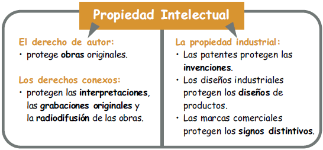

Protección de Invenciones Relacionadas con Programas de Cómputo
Las patentes protegen invenciones que sean nuevas, no obvias y útiles. En el contexto de los programas de cómputo, esto podría incluir algoritmos innovadores, procesos o metodologías utilizadas para desarrollar un programa de cómputo.
A diferencia de los derechos de autor, que protegen la expresión del software, las patentes protegen las ideas subyacentes y los métodos implementados en el software. Esto significa que un algoritmo o proceso técnico único implementado en un programa puede ser patentado.
Sin embargo, no todos los programas de cómputo pueden ser patentados. En muchos países, se excluye de la patente la protección de ideas abstractas, reglas matemáticas o programas de cómputo en sí mismos, a menos que se presenten de manera concreta en una invención técnica. En México, los programas de cómputo o software no son patentables, pero sí están protegidos por los Derechos de Autor.